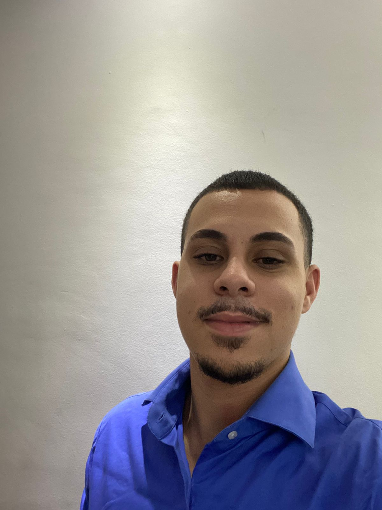

Sobre mim
Desenvolvedor de 21 anos, apaixonado por tecnologia e caminhando em minha jornada na programação. Tenho o objetivo profissional de conseguir uma oportunidade de estágio na área de TI, focado em adquirir mais conhecimento durante essa minha jornada.
No tempo livre gosto de me divertir com jogos no computador e sair com os amigos. Amo futebol e lutas, acompanho frequentemente os campeonatos e principalmente o UFC.
Comecei minha carreira no mercado de trabalho na área da saúde, na qual atuo até hoje. Atualmente trabalho em uma das maiores redes de saúde do Brasil a DASA, atuo como recepcionista a 6 meses. Já exerci o cargo de Aprendiz na sua concorrente também, o Grupo fleury, por 1 ano e 6 meses.
